学生生活
勉強だけじゃない！
充実のキャンパスライフが待っている！
入学から卒業までは、スペシャリストになるための大事な勉強期間。でも勉強ばかりじゃ人間力やコミュニケーション能力は磨けません！本校には、 社会人として、人として成長できるクラブ活動や学園祭をはじめとした様々なイベントがあります。
新宿という都心の立地は、アルバイトや、アフターファイブにも大変便利。およそ2,500人が通う本校は、新たな交友関係を広げる場としても最適です。 勉強だけではない、充実のキャンパスライフが、みなさんを待っています！
クラブ活動・同好会
クラブ活動や同好会が活発な日本電子。スポーツ系11部、文化系8部を設け、それぞれ希望者が集まり、日々の学生生活をより充実したものにしています。新しく同好会やクラブを立ち上げる学生達がいたりと、日本電子の学生はクラブ活動でもパワー全開！学科や学年を越えた交流、日本人学生と留学生、留学生同士の交流も盛んです。 クラブ活動をうまく利用して、学生生活をより一層エンジョイしてください！体育系
軟式野球部 / テニス部 / バドミントン部 / サッカー部 / 合気道部 / 水泳部 / ビリヤード部 / 剣道部 / 弓道部 / 卓球部 / バスケットボール部
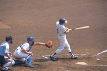
軟式野球部
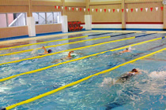
水泳部
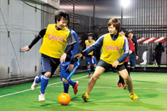
サッカー部
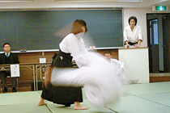
合気道部
文科系
電気クラブ / 軽音楽部 / コミックアートクラブ / ロボット研究会 / マイコンクラブ / 落語研究部 / カードゲーム同好会 / ICT研究会 / 演劇部
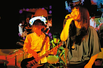
軽音楽部
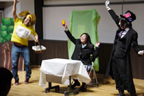
演劇部
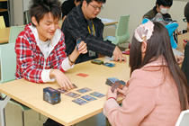
カードゲーム同好会
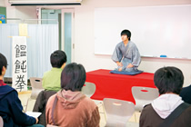
落語研究部
主な学内イベント（年間スケジュール）
日本電子には、学生時代を思いきり楽しめる2大イベントがあります。日専祭では、クラス、学科、クラブなどの有志たちによるオリジナリティあふれる企画や出展があって、見学に来た高校生や地域の皆さんに大好評。一方のスポーツフェスティバルでは、全学生が集い、チームに分かれて戦います。東京ドームでの開催ということもあり、存分に走り回れます。| 4月 |
|
| 5月～6月 |
|
| 7月～8月 |
|
| 9月 |
|
| 10月 |
|
| 11月 |
|
| 12月～1月 |
|
| 1月 |
|
| 3月 |
|
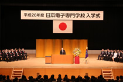
入学式
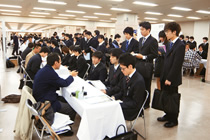
合同企業説明会
 スポーツフェスティバル
スポーツフェスティバル

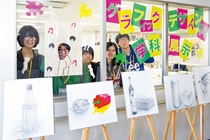
日専祭
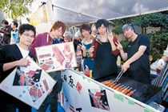
卒業式
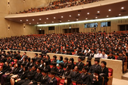